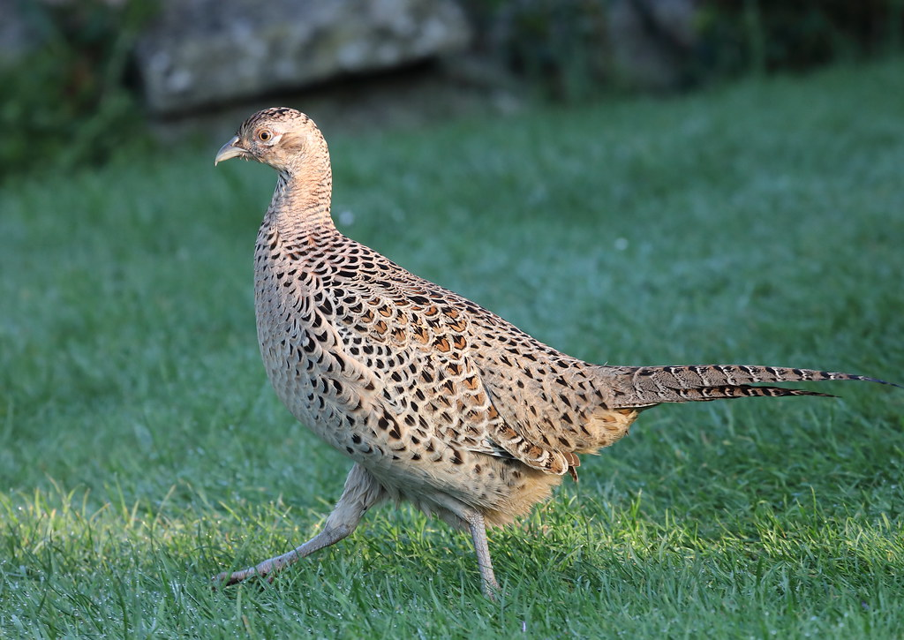

Fasaani (Phasianus colchicus) on Aasiasta kotoisin, Suomeen
1900-luvulla istutettu peltokanalintu. Karl Fazer istutti ensimmäiset fasaanit Suomeen 1901-1902 aikana Malmille.

Naaras fasaani
Ominaisuuksia
Koko: Koiras: 70-90 cm paino 1,25 kg, naaras: 35-70 cm ja 1 kg
Lisäänytminen
Koiras kokoaa huhtikuussa lauman naaraita johon voi kuulua jopa 7 naarasta
Naaras munii touko-kesäkuussa 8-16 munaa. Naaras hautoo munia 22-27 vuorokautta